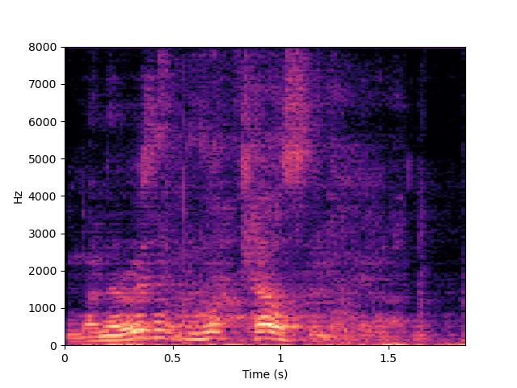
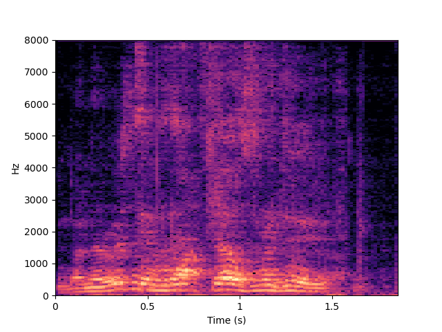
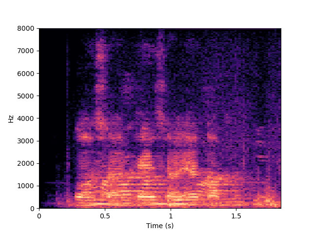

Speech Enhancement System Compression Using Parameter Tying and Mixed Precision Quantization
Authors:
Abstract: Speech enhancement systems are crucial components in many speech processing tasks, such as automatic speech recognition (ASR). Their practical deployment on devices requires their memory footprints and computation costs to be aggressively reduced. To this end, a novel KL divergence based parameter sharing approach is proposed for state-of-the-art temporal convolutional networks (TCNs) based audio-visual multi-channel speech separation systems featuring mask-based MVDR beamforming. Experiments are conducted on two tasks using overlapped speech simulated from the English Oxford LRS2 and Cantonese CI-AVSR datasets. The efficacy of the proposed TCN parameter tying approach is extensively shown when used as a standalone model architecture compression technique in comparison to low-rank factorization and penalized neural architecture search, as well as when combined with low-rank factorization and mixed precision low-bit precision quantization approaches. An overall “lossless” model compression ratio of up to 18.54 times is obtained over the baseline uncompressed audio-visual multi-channel speech separation system while incurring no statistically significant ASR word or character error rate increase. Comparable speech enhancement performance measured using scale-invariant signal-to-noise ratio (SI-SNR) scores is also produced. The same “lossless” speech enhancement system compression ratio is retained after applying 5-bit mixed precision quantization to the Conformer ASR back-end.
I. Audio-visual Multi-channel Mask-based MVDR Speech Separation Front-endII. TCN Model Architecture Compression
III. Low-bit Precision Quantizatoin of TCN
IV. Experimental Setup and Results
V. Reference
I. Audio-visual Multi-channel Mask-based MVDR Speech Separation Front-end
- Audio-visual multi-channel mask-based MVDR based speech separation system [1]. The TCN blocks are highlighted in blue (one in the Audio Block; three in the Target Speech and Noise Blocks each), which account for more than 84% of the overall model parameters. The speech separation front-end is on the top (the light yellow box), and the Conformer recognition back-end is on the bottom (the light red box)..
II. TCN Model Architecture Compression

- Temporal convolutional network (TCN) block. Each of the 8 dilated 1-D ConvBlocks consists of two 1×1 convolutional layers located at both ends (“1x1 Conv1” and “1x1 Conv2” in blue). A depth-wise separable convolution layer (D-Conv) is located in the center. PReLU and batch normalization layers are added before and after the D-Conv layer.
- Low-rank factorization of the two TCN 1x1 convolutional layers into four “1x1 Conv1 (left/right)” and “1x1 Conv2 (left/right)” weight matrices in blue.

- Penalized neural architecture search over the projection layer dimensionality for low-rank factorized TCN 1x1convolutional layers ranging from 40 to 170.
- Parameter sharing among low-rank factorized weight matrices located at comparable positions (highlighted in the same yellow boxes) across different dilated 1-D ConvBlocks within a TCN.
III. Low-bit Precision Quantizatoin of TCN

- Mixed precision quantization of low-rank factorized TCN’s 1x1 convolutional layers (shown "1x1 Conv1 (left/right)" and "1x1 Conv2 (left/right)") with their layer level varying precision settings learned using KL divergence [2].
- Mixed precision quantization of low-rank factorized TCN’s 1x1 convolutional layers (shown "1x1 Conv1 (left/right)" and "1x1 Conv2 (left/right)") with their layer level varying precision settings learned using Hessian trace.
- Mixed precision quantization of low-rank factorized TCN’s 1x1 convolutional layers (shown "1x1 Conv1 (left/right)" and "1x1 Conv2 (left/right)") with their layer level varying precision settings learned using penalized NAS.
IV. Experimental Setup and Results
A. Experimental setup
(1) Oxford LRS2 data simulated overlapped speech
- A 15-channel symmetric linear array with non-even inter-channel spacing is leveraged to simulate the multi-channel overlapped speech using the Oxford LRS2 dataset [3] with 96997, 4272 and 4972 utterances respectively for training (91.37 hours), validation (2.59 hours) and test (2.32 hours).
- Espnet style Conformer AED ASR model contains 12 encoder and 6 decoder layers is used in the submitted paper.
- In all the experiments of the simulated LRS2 overlapped speech, “lossless” compression is achieved when no statistically significant (MAPSSWE [4], α= 0.05) WER increase is observed after model compression.
(2) CI-AVSR simulated overlapped speech
- A 3-channel symmetric linear array with even inter-channel spacing is leveraged to simulate the multi-channel overlapped speech using the Cantonese CI-AVSR in-car command speech corpus [5] with 89804, 12844 and 13182 utterances respectively for training (68.8 hours), validation (9.4 hours) and test (9.4 hours).
- Espnet style Conformer AED ASR model contains 12 encoder and 6 decoder layers is used in the submitted paper.
- In all the experiments of the simulated CI-AVSR overlapped speech, “lossless” compression is achieved when no statistically significant (MAPSSWE [4], α= 0.05) CER increase is observed after model compression.
B. Experimental results of speech enhancement front-end outputs on the simulated LRS2 overlapped speech
| Maximum “lossless” compression ratio | Four ranges of the angle difference between the target and interfering speakers relative to the microphone array | ||||||
|---|---|---|---|---|---|---|---|
| [0°-15°) | [15°-45°) | [45°-90°) | [90°-180°) | ||||
| Target speaker video | - | ||||||
| Overlapped speech | - |

|

|
||||
| Clean speech | - |

|

|

|
|||
| Audio-visual Mask-based MVDR (uncompressed model) (Sys. 1 in TABLE IV in the submitted paper) |
1.0 |

|
|||||
| Audio-visual Mask-based MVDR + Low Rank (Sys. 2 in TABLE IV in the submitted paper) |
2.07 | ||||||
| Audio-visual Mask-based MVDR + Low Rank + Penalized NAS (Sys. 4 in TABLE IV in the submitted paper) |
2.87 |  | |||||
| Audio-visual Mask-based MVDR + Low Rank + Parameter Sharing (Sys. 5 in TABLE IV in the submitted paper) |
3.93 |

|
|||||
| Audio-visual Mask-based MVDR + Low Rank + Parameter Sharing + KL Divergence Based Mixed Precision Quantization (Sys. 16 in TABLE IV in the submitted paper) |
18.54 |  | |||||
C. Experimental results of speech enhancement front-end outputs on the simulated CI-AVSR overlapped speech
| Maximum “lossless” compression ratio | Examples | ||||||
|---|---|---|---|---|---|---|---|
| Target speaker video | - | ||||||
| Overlapped speech | - |  | |||||
| Clean speech | - |

|
|||||
| Audio-visual Mask-based MVDR (uncompressed model) (Sys. 1 in TABLE VI in the submitted paper) |
1.0 | ||||||
| Audio-visual Mask-based MVDR + Low Rank (Sys. 2 in TABLE VI in the submitted paper) |
1.41 |
|
|||||
| Audio-visual Mask-based MVDR + Low Rank + Penalized NAS (Sys. 4 in TABLE VI in the submitted paper) |
1.70 |

|

|

|
|||
| Audio-visual Mask-based MVDR + Low Rank + Parameter Sharing (Sys. 5 in TABLE VI in the submitted paper) |
2.71 | ||||||
| Audio-visual Mask-based MVDR + Low Rank + Parameter Sharing + KL Divergence Based Mixed Precision Quantization (Sys. 16 in TABLE VI in the submitted paper) |
13.84 | ||||||
V. Reference
[1] J. Yu et al., “Audio-Visual Multi-Channel Integration and Recognition of Overlapped Speech,” IEEE T AUDIO SPEECH, 2021.
[2] J. Xu et al., “Mixed Precision DNN Quantization for Overlapped Speech Separation and Recognition,” in ICASSP, 2022.
[3] J. Son Chung et al., “Lip Reading Sentences in the Wild,” in CVPR, 2017.
[4] L. Gillick et al., “Some statistical issues in the comparison of speech recognition algorithms,” in ICASSP, 1989.
[5] W. Dai et al., “CI-AVSR: A Cantonese Audio-Visual Speech Datasetfor In-car Command Recognition,” in LREC, 2022.